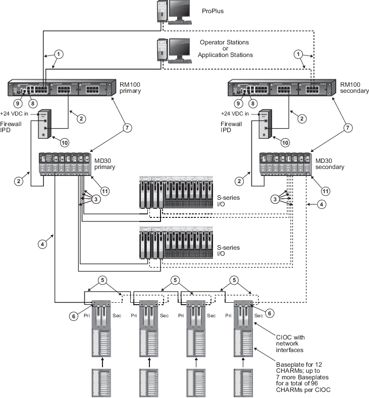

Twisted-pair network with CHARMs I/O, S-series I/O, and DeltaV Firewall IPD
DeltaV Smart Switches in a twisted-pair network with CHARMs I/O,
S-series I/O, and Firewall IPD

| Callout | Description |
|---|---|

|
100 m (max) straight-through or crossover cable. To prevent ground loops, build this cable assembly with a shielded, metal-enclosed RJ45 connector on one end and an isolated, plastic-enclosed RJ45 connector on the other end. The metal connector end of this cable must be placed on the switch and not on the PC. |

|
100 m (max) straight-through or crossover cable. To prevent ground loops, build this cable assembly with a shielded, metal-enclosed RJ45 connector on one end and an isolated, plastic-enclosed RJ45 connector on the other end. The metal connector end of this cable assembly can be placed on either end of the link. |

|
100 m (max) straight-through or crossover cable. The shield on the controller’s RJ45 connector connects only to a Faraday cage in the controller; not to the controller’s DC ground. Therefore, the RJ45 connectors are floating and the single point of ground is made at the switch to which the controller is connected. Build this cable assembly with a shielded, metal-enclosed RJ45 connector on both ends. |

|
100 m (max) straight-through or crossover cable. The shield on the CIOC's RJ45 connector connects only to a Faraday cage in the CIOC; not to the CIOC's DC ground. Therefore, the RJ45 connectors are floating and the single point of ground is made at the switch to which the CIOC is connected. Build this cable assembly with a shielded, metal-enclosed RJ45 connector on both ends. |

|
100 m (max) straight-through or crossover cable. The shield on the CIOC's RJ45 connector connects only to a Faraday cage in the CIOC; not to the CIOC's DC ground. Therefore, the RJ45 connectors are floating and the single point of ground is made at the switch to which the CIOC is connected. In this figure, the CIOC cards are daisy-chained, so that the cable shield grounding is passed through from the first switch's shield ground to the first CIOC's shield ground and then from CIOC to CIOC throughout the chain. Note that the Primary and Secondary RJ45 shielded connectors are isolated from each other so there is no ground loop possible between Primary and Secondary shield grounds. CIOCs are daisy-chained in order to use short lengths of cable, for example within a cabinet, where the links are protected against damage. The cascade port, which is used to create the daisy-chain, is the lower port on the CIOC Carrier. It is recommended that for long lengths of cable, a star-wired connection from each CIOC back to the switch is used. Build this cable assembly with a shielded, metal-enclosed RJ45 connector on both ends. |

|
The I/O ports on the CHARM I/O Carrier
hold a control network port and a cascade port. The cascade port is the lower
port. The image in
CHARM I/O Carrier specifications
shows the two ports. When the cascade port is used to daisy-chain the CIOCs, it
is recommended that you use counter-rotating wiring to increase availability in
case a CIOC fails. When counter rotating wiring is used, the primary control
network connects to the first CIOC which is the CIOC on the left in the image
and the secondary control network connects to the last CIOC which is the CIOC
on the right in the image. Use 100 m (maximum) straight-through or crossover
cables. The shield on the CIOC's RJ45 connector connects only to a Faraday cage
in the CIOC, not to the CIOC's DC ground. Therefore, the RJ45 connectors are
floating and the single point of ground is made at the switch to which the CIOC
is connected. Build this cable assembly with a shielded, metal-enclosed RJ45
connector on both ends.
The I/O ports are powered by the CIOCs installed in the carrier. If both CIOCs are removed from a CIOC carrier, enabled cascade ports become unpowered causing loss of communication to downstream CIOCs. Use redundant CIOCs if cascade ports are enabled to ensure that the cascade ports are powered and the CIOC is communicating with downstream CIOCs. In DeltaV Explorer, use the CIOC's Properties page to enable the cascade ports. |

|
Any combination of DeltaV RM100, MD30, and FP20 Smart Switches can be daisy-chained in series up to 12 total. |

|
If more than one RM100 or MD30 switch is required to increase port count in an area, use the gigabit uplink ports for the switch-to-switch connection to provide ample performance headroom on these aggregating links. 100mbit/s links can also be used for this purpose but normally those links are reserved for single devices on the edge of the network such as controllers and workstations. The RM100 and MD30 switches have two fixed 10/100/1000mbit/s uplink ports and two SFP uplink ports. The SFP ports can be fitted with optional fiber-optic SFP transceivers for long distance communications. Only two of the four uplinks in this area of the switch can be active at a time in any combination of twisted pair and SFP. Refer to the Smart Switch Product Data Sheet for available SFP fiber optic transceivers for the RM100 and MD30 switches. |

|
The serial port is not required for process communications; it is used only for occasional out-of-band switch setup and management. |
| The firewall IPD supports up to eight redundant controllers on its protected side in any combination of M-series and S-series controllers, and any number of CIOCs. | |

|
Use a ring tongue terminal to connect the switch's ground screw to a suitable shield ground. This connection provides a ground for the twisted-pair, shielded Ethernet connectors. |